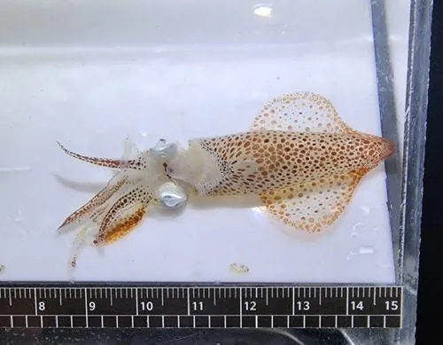

软体动物 · 动物界
日本枪乌贼 Loliolus japonica

体形细长的近海小型枪乌贼，鳍呈菱形，栖于中国东海与黄海泥沙底质海域，是常见的经济头足类。
- 分类
- 门软体动物门纲头足纲目枪形目科枪乌贼科属小枪乌贼属
- 栖息环境
- 泥沙底质浅海至数十米深处，夜间上浮
- 地理分布
- 中国黄海、东海及日本、朝鲜半岛近海
- 保护级别
- 重要经济头足类，资源量随海况波动
物种志
日本枪乌贼的胴部长约八至十二厘米，体形细长呈锥状，鳍位于胴部后端，呈菱形，约占胴长的三分之一。体表淡褐至灰白，密布细小的紫褐色斑点，色素细胞能迅速变色。腕十条，其中两条为较长的触腕，吸盘具角质环和小齿。它游动时靠外套膜喷水推进，能突然加速逃逸。
它分布于中国黄海、东海以及日本、朝鲜半岛近海，栖息在泥沙底质的浅海至数十米深处。夜间上浮捕食小型虾类和小鱼，白天贴近海底。它是短生命周期的头足类，一年即完成繁殖并死亡，繁殖期在春夏季。它是中国东海重要的经济头足类，拖网和灯光围网均可捕获，也是很多鱼类和海洋哺乳动物的食物。
形态与习性
- 胴长约八至十二厘米，细长锥状
- 鳍菱形，约占胴长三分之一
- 体色淡褐至灰白，密布紫褐细斑
- 腕十条，其中两条为长触腕
- 食性夜晚上浮捕食小型虾类和小鱼
- 寿命约一年，繁殖后死亡
趣味知识
- 它的鳍像两片菱形的纸片，靠摆动在水里悬停。
- 受惊时它把外套膜里的水猛地喷出，嗖一下倒着射出去。
- 它只活一年，繁殖完就死，所以产量随年份波动很大。